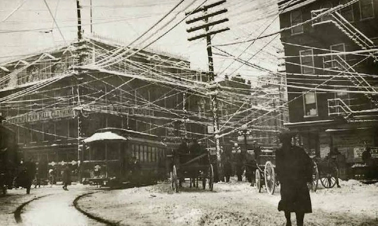

When reading the Ingrid Burrington excerpt, I got to her point about living inside a computer. She writes that, since the days of the ENIAC (which was so big people worked in it), computers have gotten smaller, yet the spaces it bridges gets bigger. In a way, the whole planet is encircled by a giant computer.
This immediately reminds me of the science fiction short story I Have No Mouth, and I Must Scream, written in 1966 by Harlan Ellison, a prolific writer infamous for not taking criticism well. It’s a techno-horror story about AI taking over the world (a plot line that’s just not fun anymore these days), but the similarity lies in the setting. The planet is literally encircled by the AI super-computer, with miles of linoleum floors, and walls of servers making a giant maze like a dense forest. Biomes on the earth grow around the computer. It’s an interesting setting that shows the protagonists of the story can’t escape the super-computer short of ejecting themselves into space – it’s literally everywhere.
The story’s setting contrasts Burrington’s observation that, in the real world, internet cable lines are hidden in our environments: they’re under sidewalks, manhole covers, sprouting from wifi towers that aren’t meant to be displayed. In this way, we don’t notice we’re in a supercomputer. In true UX design fashion, we have the unintimidating client-side user experience. I don’t think this concept is native to internet infrastructure (think coal miners in caves vs. riders inside steam-powered train cabins), nor do I think we’re living in a hellscape like the one in I Have No Mouth, and I Must Scream. I’m not a fan of pessimistic stories: I think there is a layer of unfaithful duplicity when portraying an environment, or thing, or theme as bad (at least, in most cases). But I did want to note the idea that visible computer infrastructure in the story connotes domination on an unprecedented scale (the planet), while hiding internet infrastructure in real life gives us the illusion of “the internet is magic and cool and I could live without it”.
Burrington also mentions Lower Manhattan pre-1888, where cable lines ran on poles aboveground, which was a cheaper solution to burying lines underground. She describes them as densely layered cables casting a shadow, and I found this photo on Greentech Renewables. This definitely looks like a web. It’s terrifying seeing their fragility on display while knowing the danger of snapped cables.

I also wanted to note that there is a running theme of the-world-as-a-living-thing in this reading. Burrington describes the process of microtrenching like surgery: making a narrow cut, repairing it, and leaving a scar. Companies merge and consolidate, and Burrington encourages us to use the words “dragon” and “devour” to better understand this process. Layers of spray paint and outdated maps that don’t keep up with company mergers leaves a complicated history that makes studying road signs seem like studying ancient peoples’ mythology. Burrington mentions electric cables being built upon existing infrastructure, which is built upon the landscape that makes the rise of technology follow a path similar to a herd of animals sticking to a game trail. Maybe this is a reach, and not intentional but Burrington. It’s still interesting.
A couple pages from John Bryne’s graphic novel adaptation is shown below, illustrating the super-computer as an environment or biome.